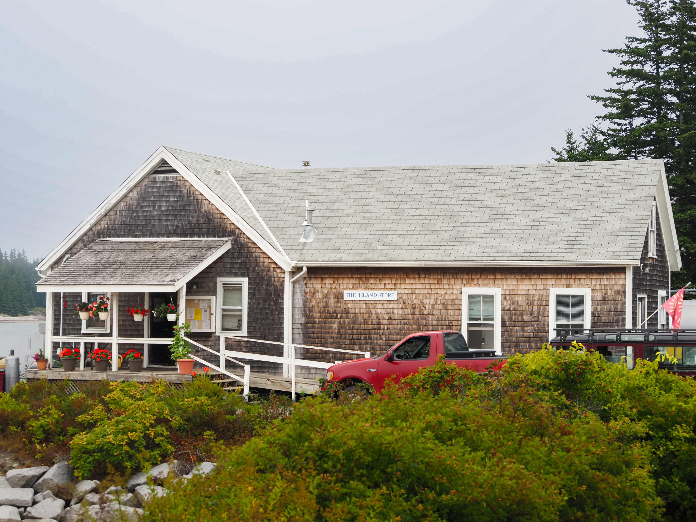
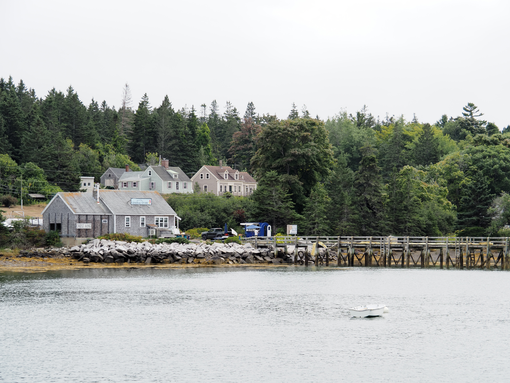
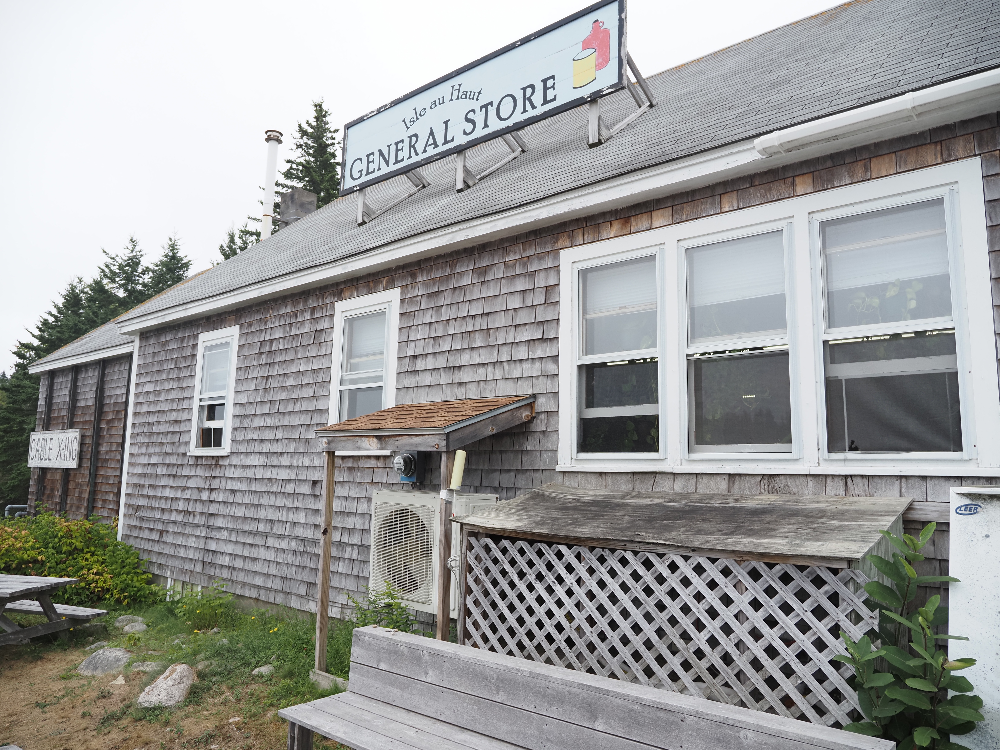
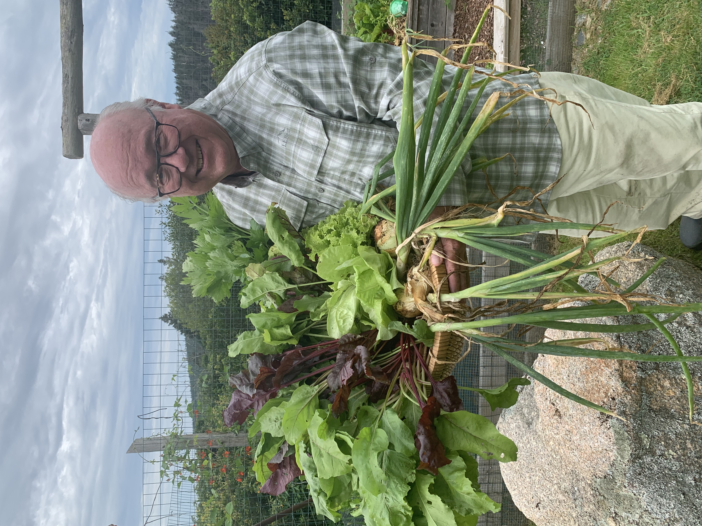

Fifty years on the Thorofare
The Island Store is over fifty years old and sits in a flood plain. Sea level rise is predicted to be up to 1 foot in 5 years, 2 feet in 25 years and 6 feet in 75 years. The Store is vulnerable.

Planning for the water
The Store is developing a strategic plan based on engineering consultation to secure the building and fuel system for the short and long-term future. All options will require substantial financial resources even with the possibility of applying for State of Maine Infrastructure grants.

Summer carries the winter
The Island Store expands during the summer with an array of produce and grocery items to meet the needs of the seasonal community. During the lean months of the winter season, the Store is open two hours every day and provides gas and kerosene to year-round residents. The few months of summer revenues have to sustain the Store during the longer winter months.
The Island Store is central to the island community. The Store is grateful to the Town of Isle au Haut for its support and for the generous contributions of members of the community.
Our board

Doug Evans
President
Doug Evans practiced law in New York City for 43 years. He first came to Isle au Haut in 1980. When not growing vegetables on the island, he teaches culinary arts in the high school division of Grace Church School in New York City.
Jeff Runge
Vice-President
Jeff is Professor Emeritus in the School of Marine Sciences at the University of Maine. Before that he was a research scientist in the Department of Fisheries and Oceans, Canada. He and his partner Lynn live in Rockport, Maine. He has been coming to Isle au Haut every summer since 1980.
Sue Chamberlain
Treasurer
Sue played a key role in the effort to construct a new library building at the Plymouth Public Library, and her work with the Cape Cod Hospital Foundation focused on supporting the development of a new emergency center. As Director of Development at Jordan Hospital in Plymouth she managed both annual fund and capital campaigns, and at the Manomet Center for Conservation Sciences she oversaw an endowment campaign as well as annual fundraising initiatives.
Wendy Pomeroy
Secretary
Wendy has spent summers on Isle au Haut since she was very young, first coming to the island to visit her grandmother, the painter Florence Pomeroy. Born and raised in New York City’s West Village, she graduated from Marlboro College with a BA in visual arts and took a graduate degree in Landscape Architecture at Radcliffe Seminars. She worked as a landscape designer, a picture framer, a model maker for a Boston architectural firm, and an installer at Harvard’s museums. Now retired from her design business, she is focusing on her own artwork. She lives in Kittery Point, Maine, with her husband Deane Rykerson.

Rachel Harris
Chair, Fundraising Committee
Rachel is a retired psychologist with a clinical and research background and the author of five books. She fell in love with Isle au Haut on a day hike in 1988 and bought her small cabin immediately. She now lives on Isle au Haut eight months of the year.
Support the Store
The Friends was created so that the Island Store can plan for the future instead of surviving one winter at a time.